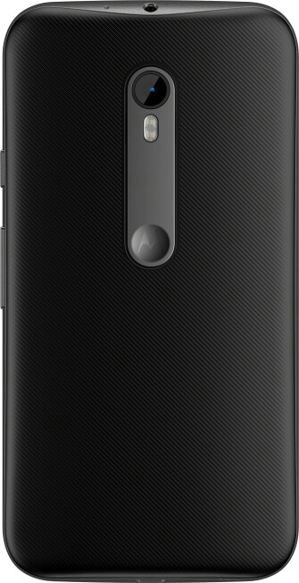
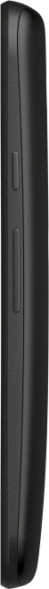
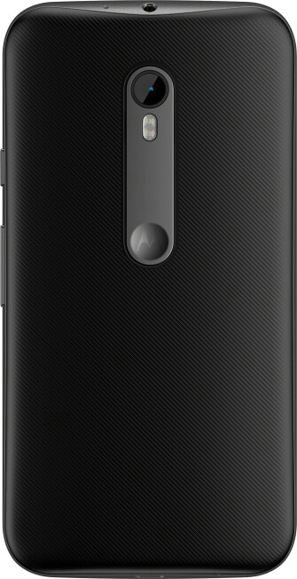
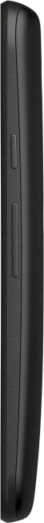

| Good:
Bad:
|
Specification | Overview | Price |
At end of the even with some obvious sacrifices the Moto G 3rd Gen is still one of the best budget devices when it comes to being a great overall performance and handle everything you throw it with little to no issues. This is the third iteration of the all so popular Moto G, the phone that brought back Motorola back to life. Pretty much everything about the phone has been given an upgrade, but only on the inside, like the processor, camera , battery life and an improvement from splash proof to waterproof. The phone still retains its form and size along with its screen.
Although the looks of the phone is certainly not eye catching , it’s built pretty well. There is plastic around the edges, but the back of the phone is textured pretty nicely and give you a good grip on the phone. The back cover is removable though the battery ain’t, but it has an SD card slot down there, whose absence is seen as a deal breaker for quite a few. When the back is properly strapped on the phone is IPX7 water resistant which pretty much takes care of the phone in rains or splashes or even an accidental drop into a swimming pool.
This is one of the strengths of this phone as it sports the same 13MP sensor as on the Nexus 6, though it skips out on OIS and 4K recording, which isn’t a big deal at this price range. The 13MP rear camera has an aperture of f/2.0 plus a dual tone dual LED flash for better night photographs. The front camera is a 5MP unit which will go well with selfie lovers.
The phone retains the 5 inch IPS LCD panel and the resolution as well at 720p of the Moto G2. The display isn’t the brightest around but it has okay viewing angles. Since it’s an IPS LCD the color reproduction is not something you need to worry about, as it does pretty well in almost all scenarios.
The Moto G3 is powered by a Snapdragon 410, which is a quad core processor which can handle almost anything, if not everything you throw at it in a day to day usage. The Adreno 306 GPU helps it run games smoothly. The 720p screen means less workload on the CPU and the Moto UI is as close as you can get to stock OS which is rather light weight. The phone can be updated to latest Marshmallow version of Android, so multi tasking will be seamless and is aided by 2 gigs of RAM.
The battery gotta bump this time around from the 2070 mAh to 2470 mAh , on literally the same device which gives a massive boost to its battery life and makes it one of this phones best features. The phone already had one of the best standby times among android phones and used to easily last a day on normal usage, and this bump can result in light users of the phone go 2 days without charging.
This a phone that wants to be the best in its segment, and it does a pretty good job at it as well. The strengths of the phone lie is the 13MP camera module shared with the Nexus 6 flagship from Google, an amazing battery and its smooth stock like OS, it’s already got Android 6.0 and Motorola devices are among the first devices in market to receive the latest Android updates.